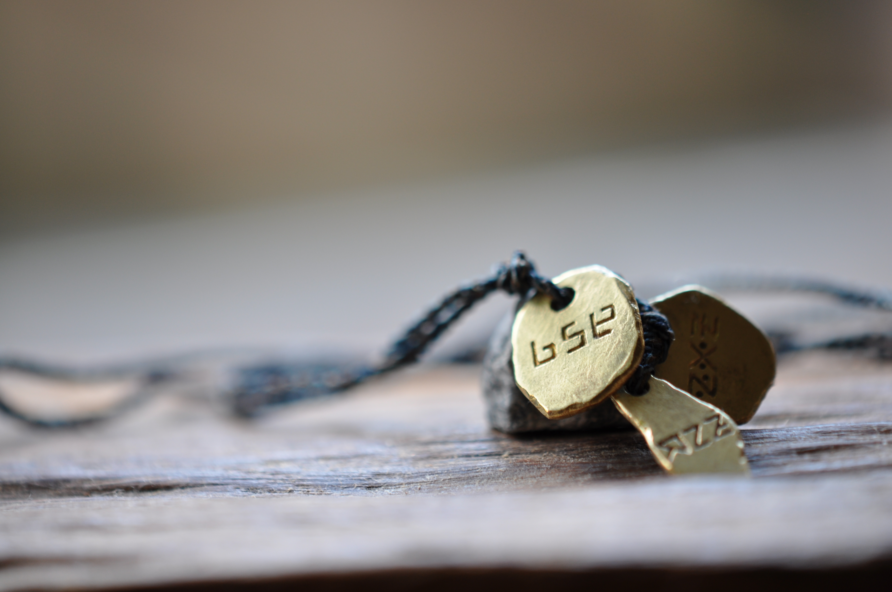

2012年
制作したのは2012年です。
当時、アトリエでヒーリングを受けると大きく楽になるものの、日常生活ではその状態を維持することが難しいクライアントが何人かいました。
そこで、私がそばにいない時間にも、その人の状態を支えるものを作れないかと考え、個別のヒーリングアクセサリーを制作するようになりました。
さまざまな石やビーズの組み合わせによって、生命の働きを助ける触媒の形式を作れることが分かり、その経験を汎用型へと発展させたものがプレローマです。
Healing Accessory
プレローマ

生命は、もともと自分を生かす力を持っています。
プレローマは、何か特別な力を外から付け加えるのではなく、生命が本来持っている力を引き出し、その働きを整えるためのヒーリングアクセサリーです。
Pleroma（プレローマ）は、古代ギリシャ語で「充満」を意味する言葉です。
本来の完全性、充満した生命の源泉から、私たちの存在へと力が流れ込む。
そのような生命観から、この名前をつけました。
プレローマは、3枚のプレートで構成されています。
それぞれが、人間の持つ3つの領域に対応しています。
身体の働き
思考や感情を生み出す働き
生命の深いところ（コア）
霊は源流、心は中流、身体は下流。
生命の源流には、本来、満ち足りた力があります。しかし、その力が心や身体へと流れていく過程で、私たちは自らその働きを妨げてしまうことがあります。
プレローマは、身・心・霊のそれぞれに働きかけ、生命全体のエネルギーを整えることを目指して作られました。
2012年
制作したのは2012年です。
当時、アトリエでヒーリングを受けると大きく楽になるものの、日常生活ではその状態を維持することが難しいクライアントが何人かいました。
そこで、私がそばにいない時間にも、その人の状態を支えるものを作れないかと考え、個別のヒーリングアクセサリーを制作するようになりました。
さまざまな石やビーズの組み合わせによって、生命の働きを助ける触媒の形式を作れることが分かり、その経験を汎用型へと発展させたものがプレローマです。
プレローマを身につけることで、身体には次のような変化が確認できます。
しかし、プレローマが目指しているのは、単なる運動能力の向上ではありません。
呼吸が深まれば、その影響は身体全体に及びます。そして身体の状態は、精神の状態とも切り離せません。
私は、こうした全体的な変化を「エネルギーが整う」と表現しています。
これまでプレローマをお使いの方から、こんなお声をいただいています。
「心が落ち着く」
「安心する感じがある」
「全体的に調子が良い」
「なんだか今日は変だなと思ったら、プレローマを着け忘れていた」
特別なことをするのではなく、普段の暮らしの中で自然に身につけていただけるものです。
プレローマを作る際には、機能だけでなく、美しさも大切にしました。
見るからにヒーリングアクセサリーという外形ではなく、おしゃれの一部としても遜色のないデザインにしたかったのです。
外形の制作はアクセサリー作家に依頼しています。
また、金属アレルギーや帯電に敏感な方にも配慮し、金属製の留め具を使わず、紐で身につける形式にしました。
紐は蝋引きのため、水濡れは避けてください。入浴時以外は、基本的に常時装着していただけます。
プレローマは、水晶などのように浄化したり、エネルギーを補充したりする必要はありません。
制作当初から、効果が時間とともに失われないことを意図して設計しています。
実際、長年使われているプレローマもあり、2012年に制作したものも、現在なお変わらず働いていることを確認しています。
ただし、紐は長期間の使用によって摩耗し、弱くなることがあります。その場合は交換などのメンテナンスが必要です。
プレローマについて、いろいろと説明してきました。
けれど、何よりも大切なのは、ご自身の身体で確かめていただくことだと思っています。
ご自宅で一週間、普段どおりに生活しながらお試しください。
気に入っていただけたら、そのままご購入いただけます。購入されない場合はご返送ください。
体験のお申し込み・お問い合わせはLINEからどうぞ。
LINEで無料体験を申し込むプレローマ 36,000円